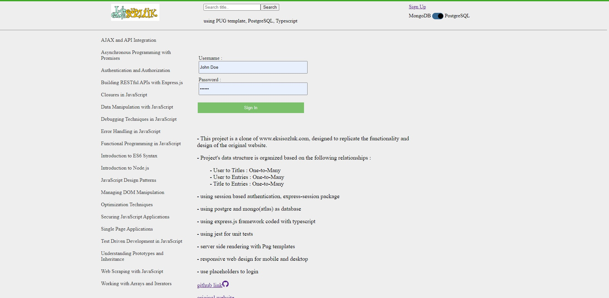

ABOUT
Engineer by trade and currently a part time junior software developer at TCM Information and Consulting. Strong engineering fundamentals and a passion for software development. Determined to carve out a rewarding career in the tech industry.
EXPERIENCE
-
2023 — present
Junior Developer
Modifying existing software to correct errors, upgrade interfaces and improve performance.
2018 — 2022Construction Engineer
Professionally engaged in a wide array of engineering endeavors, I've played pivotal roles in construction and design projects, often as a team manager. My experience spans both engineering and managerial capacities, allowing me to confidently lead and collaborate with teams to bring projects from concept to realization. Notable highlights from my career include the successful delivery of a 4MW mini-hydropower plant and its accompanying main electricity transmission line while operating as a contractor. My portfolio showcases a multitude of other achievements in this dynamic field.
Show More
PROJECTS
-

Eksi Clone (SSR - PostgreSQL)
inspired by Eksisozluk.com, a popular turkish social media platform. My clone allows users to collaboratively create and edit entries, similar to an online dictionary or encyclopedia. It provides a space for users to share humorous, satirical, or informative content on various topics related to internet trends."
Eksi Clone (SSR - PostgreSQL)
inspired by Eksisozluk.com, a popular turkish social media platform. My clone allows users to collaboratively create and edit entries, similar to an online dictionary or encyclopedia. It provides a space for users to share humorous, satirical, or informative content on various topics related to internet trends."
-
Eksi Clone (React - Mongo)
inspired by Eksisozluk.com, a popular turkish social media platform. My clone allows users to collaboratively create and edit entries, similar to an online dictionary or encyclopedia. It provides a space for users to share humorous, satirical, or informative content on various topics related to internet trends."
Eksi Clone (React - Mongo)
inspired by Eksisozluk.com, a popular turkish social media platform. My clone allows users to collaboratively create and edit entries, similar to an online dictionary or encyclopedia. It provides a space for users to share humorous, satirical, or informative content on various topics related to internet trends."